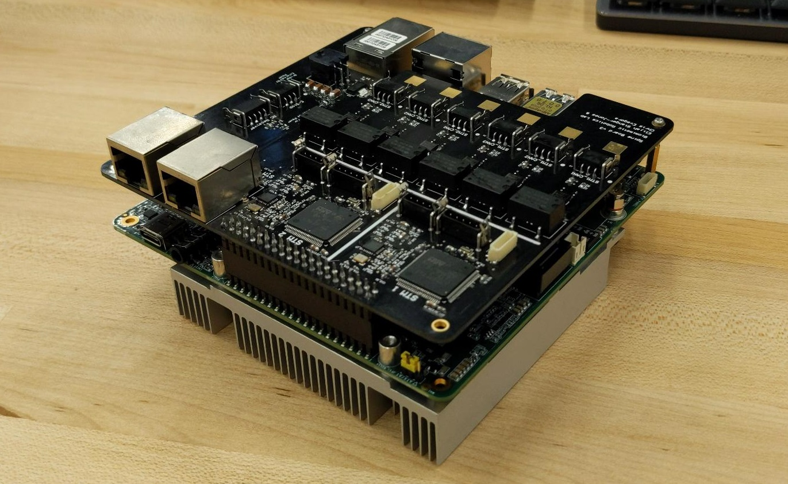
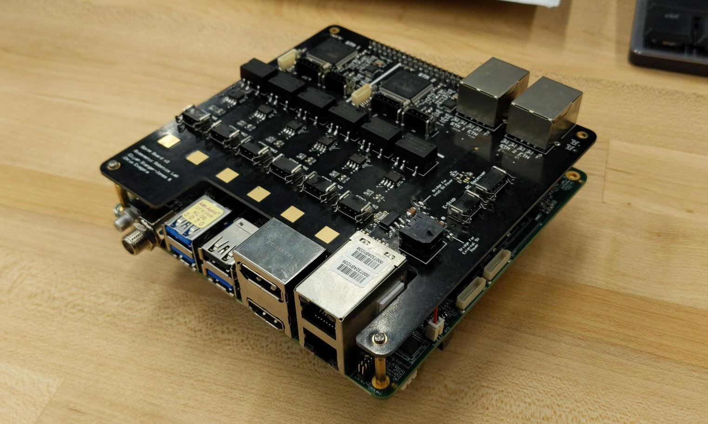
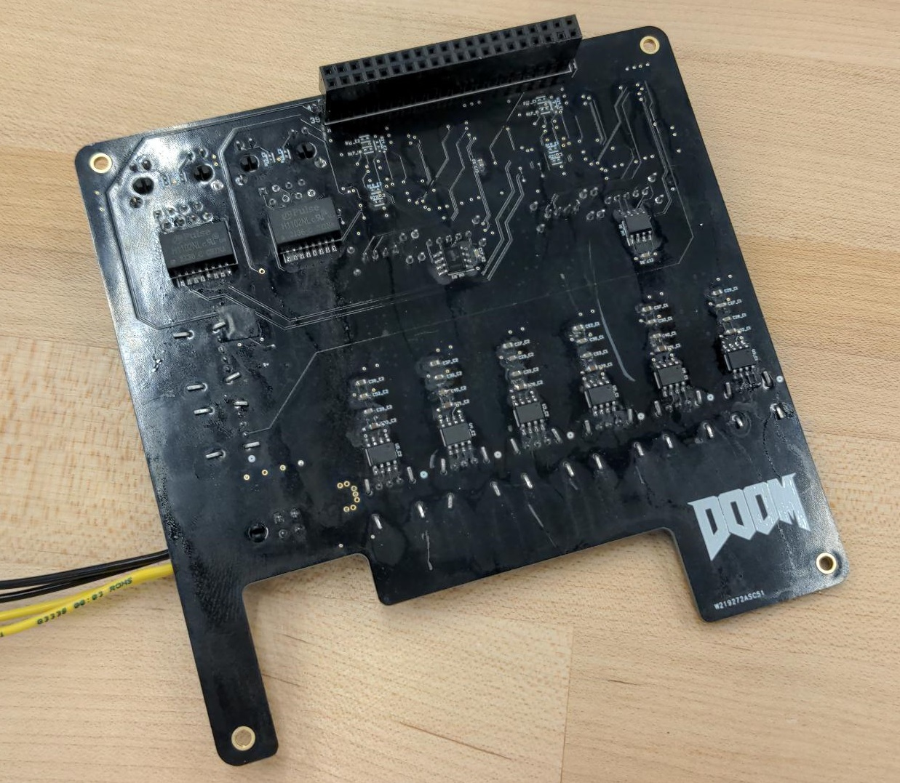
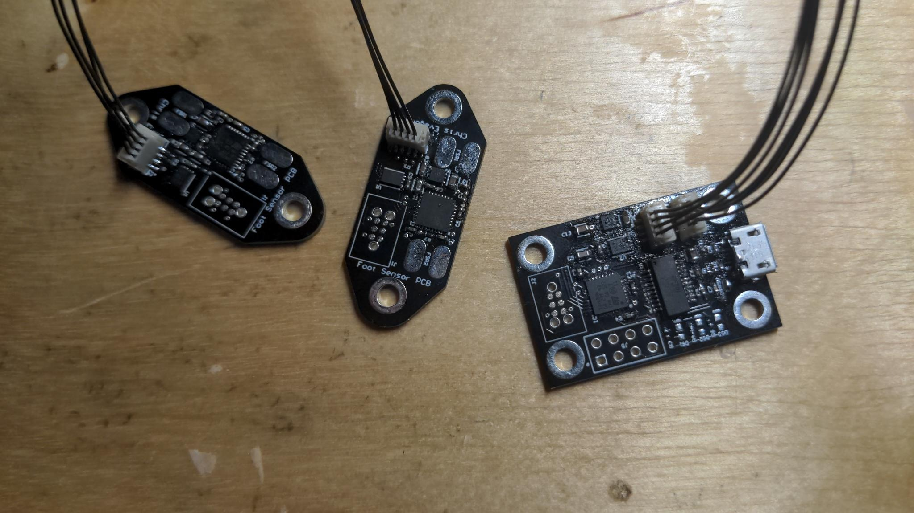
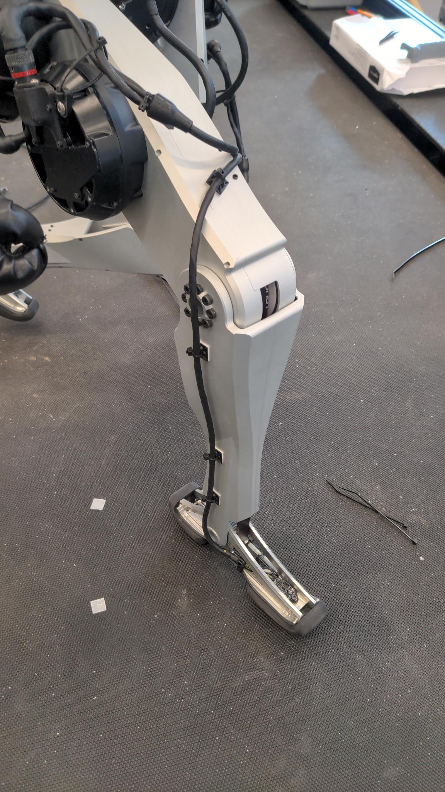
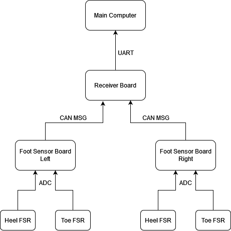

Spine Board V3
Something I've done as a research assistant at the Biomimetics Lab at MIT is help design the new revision of the spine board used in all the robots at the lab. The board is responsible for taking motor joint commands in the form of torques, speeds, or positions and acting as the interface between the main computer and the peripheral motor controllers. This board specifically translates commands received between ethernet and the CAN bus that the rest of the robot joints use. The main reason for developing this board is to do away with any bottlenecks in the data path by replacing the pre-existing spi interface with ethernet. My task was to layout and populate the boards, making sure that it would fit appropriately on the intel computer board we are using. Firmware development is currently in progress.



Humanoid Foot Sensor
Another project I took on while working on the MIT humanoid was developing a foot sensor that could better inform the robot controller about the state of the robot. Foot contact data would help the controller know when a state transition has occured which is useful when doing trajectory optimization for a hybrid system. The system comprised of three PCBS, two sensors in each foot that measured the force applied to the heel and toe, and a third receiver board that accepts incoming CAN packets from the sensor boards and translates them over USB for the main computer to read.
I designed these PCBs from the ground up and even hand populated them. All the firmware was written by me in CubeIDE for the onboard STM32 microcontrollers.


